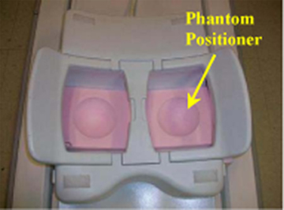
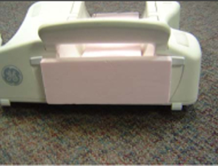

Operating Documentation
Direction 5670006, Rev# 1
Discovery MR750w GEM Service Methods
Module Version 1.0, Version Date 9/29/11
Operating Documentation |
| Required Persons | Preliminary Reqs | Procedure | Finalization |
|---|---|---|---|
| 1 | Not Applicable | 30 mins | Not Applicable |
Follow this procedure to prepare for the automated SNR test using the 3.0T Breast Array Coil, GE Healthcare Catalog Number M7000GF or M7000GG (without biopsy plates).
| NOTE: | Coils do not ship with phantoms. Phantoms come in a Unified Phantom set with the MR system. |
| Item | Qty | Effectivity | Part# | Manufacturer | |
|---|---|---|---|---|---|
| 10 cm Spherical Unified Phantom | 2 | Unified Phantom Set | 2360034 | - | |
| Unified Phantom Positioner | 1 | Unified Phantom Set | 5343432 | - | |
| Condition | Reference | Effectivity |
|---|---|---|
Use the following pre-installed coil configuration names to run this tool: HDBreastRight and HDBreastLeft. | - | - |
Install the Flat Filler Panel into the magnet end of the GEM table.
Illustration 1: Flat Filler Panel on GEM Table

Place the coil on the patient table, and insert the Phantom Positioner into the coil as shown.
Illustration 2: Phantom Positioner Inserted in Coil

| NOTE: | The position of the spherical phantoms from the side of the coil is shown below. |
Illustration 3: Position of Spherical Phantoms

Place the phantoms on the Phantom Positioner as shown, connect the coil to Port A of the Low Profile Carriage Assembly (LPCA), landmark on the center of the bridge between both chambers, and [Advance to Scan].
Illustration 4: Landmark on Center of Bridge

Run the Multi-Coil Quality Assurance Tool on the coil.
No finalization steps.